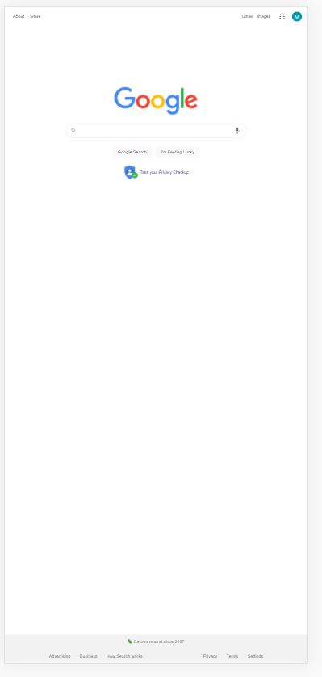
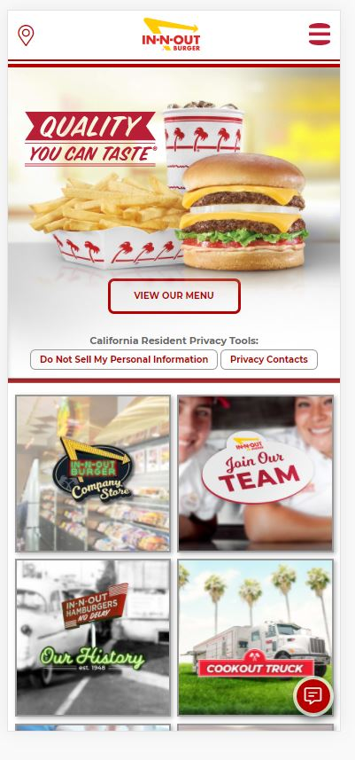
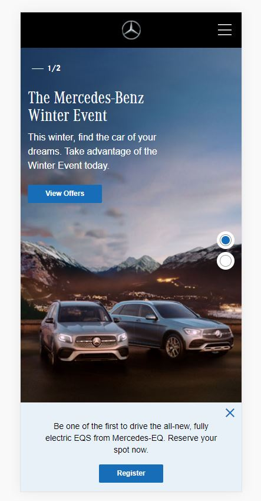

White Space and Clean Design
https://www.google.com/
Google uses whitespace perfectly. On this page we can see that the logo is in the center giving a large space around it. the edges look very natural and it really does serve a purpose. this purpose is that the logo is clear and that the search bar is clearly visible and in the center
Contrast
In-n-Out
https://www.in-n-out.com/
The contrast is this page helps us to focus their gaze on the hamburger. for that reason the hamburger is in a large size. We can also see that the colors stand out a lot. This type of design helps us to let speculators know very well which is the main product
Alignment
Mercedes
https://www.mbusa.com/
The content of this page is well aligned its letters. This helps us highlight the message and helps make the main message or ad stand out. a good match